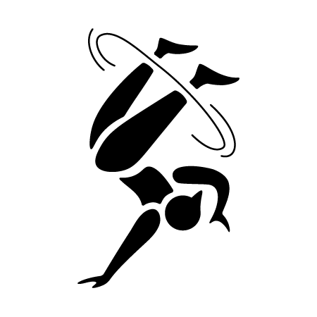

Summer Olympics
Pictograms in Play
A redesign of the 2024 Summer Olympic Pictograms

About the Project
Goal
The goal was to to create a set of four cohesive pictograms that represented events in the Olympic Games. The four sporting events I chose were Rhythmic Gymnastics, Breaking, BMX Freestlying, and Rugby.
Research and Sketching
Sketching the dynamic movements of each sport was key to finding the right design. I wanted my pictorgrams to flow with the athlete but also showcase their sport elegantly. Combining fine lines with organic shapes lead to the final iteration.
Scope
Project Type: Pictogram Redesign
Software: Adobe Illustrator
Final Iterations + Negatives
Rhythmic Gymnastics
Breaking

BMX Freestlying
Rugby
